巧克力杯子蛋糕

家中小小孩一看見媽咪烤箱啟動~都會問起~是做杯子蛋糕嗎??這次是做杯子蛋糕沒錯!!濃濃巧克力香的杯子蛋糕~我喜歡放置一夜之後巧克力香會更濃~口感會更濕潤綿密!!但小小孩早已忍不住開始吃起來了
 食材
食材
全蛋 1顆
蛋黃 3顆
砂糖 10g
玄米油 45g
鮮奶 65g
低筋麵粉 65g
無糖可可粉 20g
蛋白霜
蛋白 3顆
檸檬汁或白醋 少許
細砂糖 45g
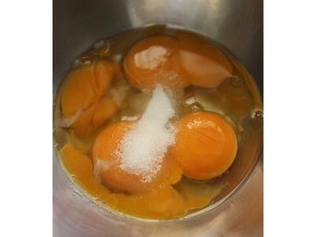
1
全蛋與蛋黃先與砂糖拌勻備用
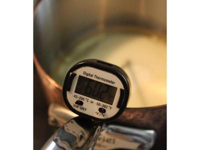
2
將油與鮮奶入鍋中~加熱至60-65度~離火
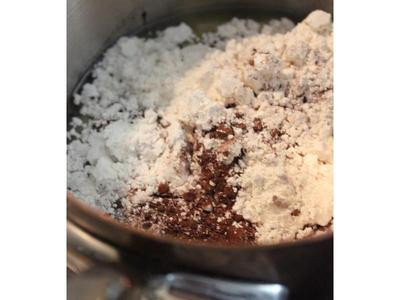
3
加入低筋麵粉與可可粉
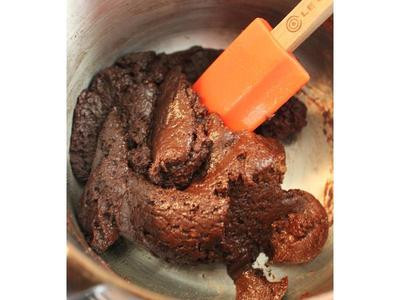
4
拌勻~會呈柔軟帶點彈性團狀~不是硬硬的!
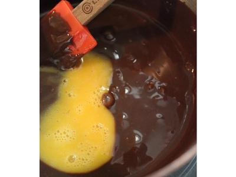
5
分4次加入拌勻的步驟一~每加一次拌勻~再加入下一次~直到蛋加完
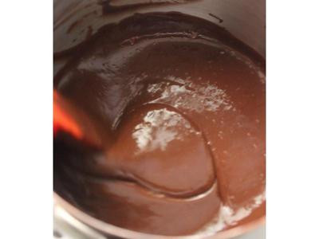
6
狀態是非常絲滑的!可可蛋黃糊完成
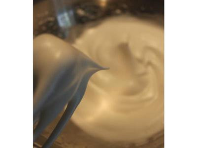
7
蛋白霜製作:蛋白加檸檬汁或白醋~砂糖分三次~高~中~低速~打至直立且蛋白霜非常光澤有亮度
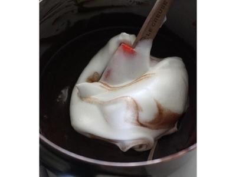
8
先拿1/3打發的蛋白拌入蛋黃糊中~仔細拌勻
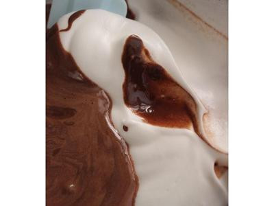
9
之後再將拌勻的麵糊倒回蛋白霜中
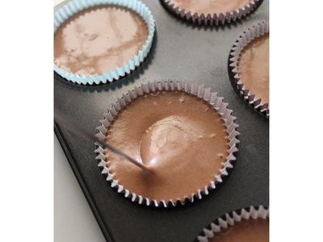
10
拌勻~拌好麵糊呈現狀態~濃稠的非水水的!使用馬芬紙杯模~麵糊倒九分滿~可以製做10個杯子蛋糕～入模後震一下讓大氣泡消掉～入爐
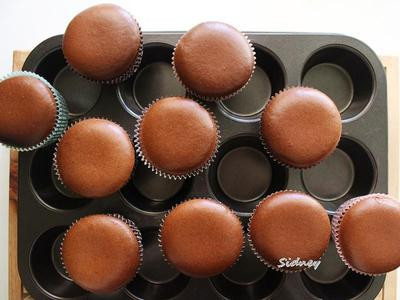
11
爐中放一杯水增加烤箱濕度~不是水浴！110度15分鐘(表面凝結)~120度10分鐘~130度10分鐘~150度10分鐘~160度10分鐘**我使用的風扇烤箱~無上下火分開調整的功能
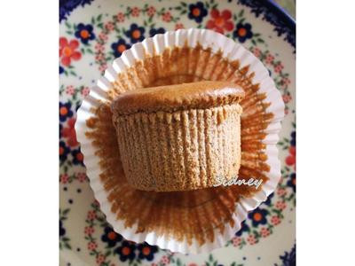